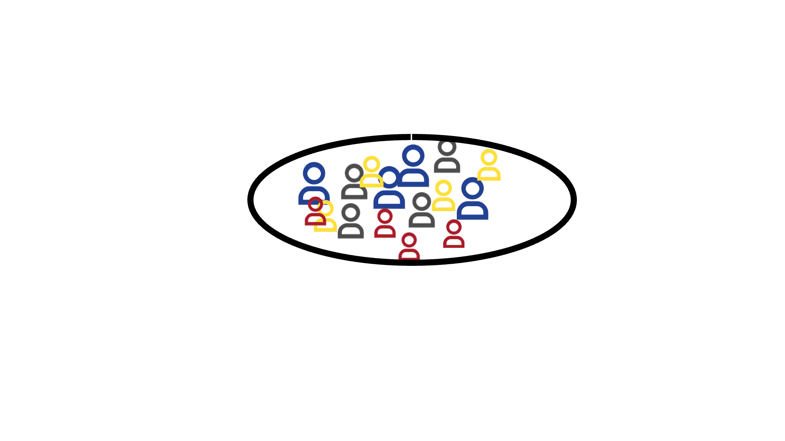

Ich bin Anna, die KI-Professorin.
Beim letzten Mal haben wir die Welt des überwachten Lernens erkundet, bei dem Maschinen aus gekennzeichneten Beispielen lernen, um Vorhersagen zu treffen.
Heute werden wir einen anderen Ansatz untersuchen: das unüberwachte Lernen.
Beim unüberwachten Lernen erkennt die Maschine Muster in unbeschrifteten Daten.

KI-Systeme, die den Ansatz des unüberwachten Lernens nutzen, finden in verschiedenen Branchen breite Anwendung.
Sehen wir uns mal einige Beispiele an.

Habt ihr bei Musik-, Video- und Film-Streaming-Diensten wie YouTube und Netflix schon einmal personalisierte Empfehlungen bemerkt, die eure Vorlieben perfekt treffen?
Einige dieser KI-Systeme wurden mithilfe des unüberwachten Lernens entwickelt, um personalisierte Empfehlungen zu erstellen.
Es gibt auch KI-Systeme, die das Verhalten von Kunden analysieren und sie basierend auf Kaufgewohnheiten segmentieren. Dies ermöglicht gezielte Marketingstrategien und hilft Unternehmen, Trends vorherzusagen und bessere Entscheidungen zu treffen.


Der Ansatz des unüberwachten Lernens steckt auch hinter anderen beliebten KI-Systemen in der Gesellschaft, wie zum Beispiel:
Aber wie lernen Maschinen, Muster in unbeschrifteten Daten zu erkennen und reale Probleme zu lösen?
Tauchen wir tiefer ein und erfahren wir mehr über den Ansatz des unüberwachten Lernens!